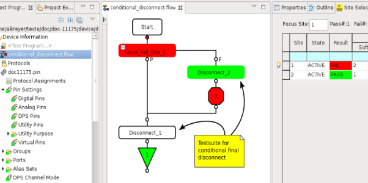
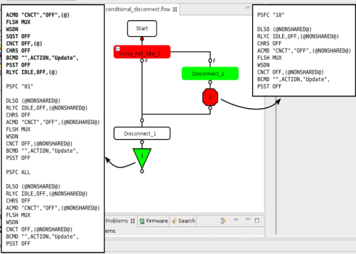

Implementing a conditional final disconnect with disconnect.user_def
This section explains how to use the test method together with the user-defined disconnect sequence in order to implement a conditional final disconnect.
About this task
The Effects of user-defined disconnect sequence can be solved by inserting an additional test suite in front of every bin. This test suite uses a test method doing a "final" disconnect of all pins including "SQST OFF" via a FW_TASK, when binning of the very last site happens.
Before you begin
Make sure the correct User-defined disconnect sequence disconnect.user_def is existent.
Procedure
- Create a test method to define a conditional disconnect sequence, which needs to judge whether binning happens for the last enabled site. If yes, apply the "final" disconnect including the command SQST OFF to all pins.
- Create a test suite which calls the test method defined above, and insert this test suite in front of each bin.
Results
In a 2-site test flow, site 1 fails and site 2 passes. In the picture, site 1 is in focus. After implementing a conditional final disconnect, the test flow will look like below:

Example
Below is the sample code for doing conditional final disconnect:
ARRAY_I enabledSites;
INT numEnabledSites, numLastBinnedSites;
const string finaldisconnect = "ACMD \"CNCT\",\"OFF\",(@) \n; FLSH MUX;\n WSDN; \n SQST OFF; \n "
"CNCT OFF,(@); \n CHRS OFF; \n BCMD \"\",ACTION,\"Update\",; \n "
"PSST OFF; \n RLYC IDLE,OFF,(@);";
//
// Define a FW sequence, which will be used to do the final disconnect for the last enabled site(s)
//
numEnabledSites = GET_ENABLED_SITES(enabledSites);
numLastBinnedSites = GET_ACTIVE_SITES(enabledSites);
cerr << "#enabledSites: " << numEnabledSites << endl;
//
// Do the conditional judgment before each binning action
//
if(numEnabledSites == numLastBinnedSites)
{
cerr << "do final disconnect with: " << finaldisconnect << endl;
//
// Execute the final disconnect for last enabled site(s)
//
FW_TASK(finaldisconnect);
}The implementation of the test method in the same 2-site test flow (as described above) produces the following output in the MCDLog file. When site 1 fails and is binned out, site 2 is still enabled. Until site 2 passes and reaches to the end of the test flow, it is the last enabled site, then conditional final disconnect sequence (as a string defined in the test method) is executed to shut down the sequencers on all pins (using "@") via SQST OFF and do a complete disconnect.

In the above figure, the highlighted output next to bin1 is the string defined in the sample code for doing the final disconnect on site 2.
Other output commands without highlighting, are the content defined in your disconnect.user_def file. SmarTest adds a PSFC command automatically before the user-defined disconnect sequence to define the site focus.
Functional changes
- Introduced before SmarTest 6.3.2